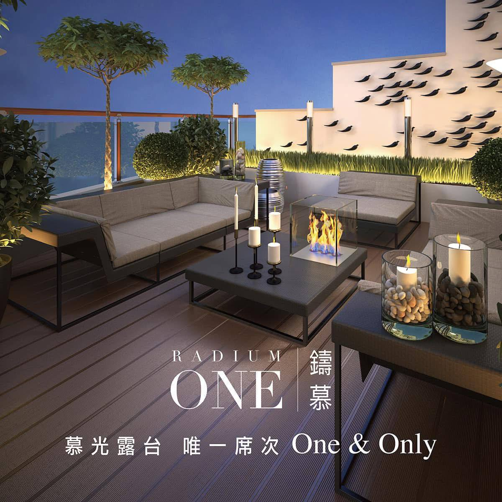
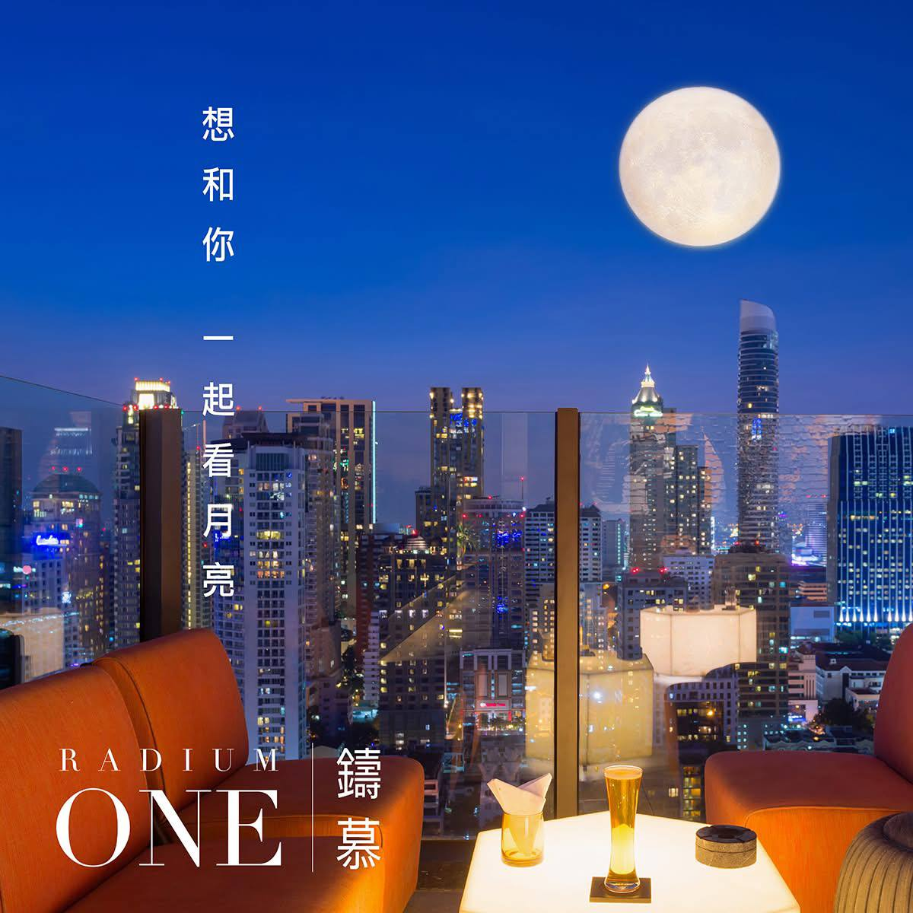
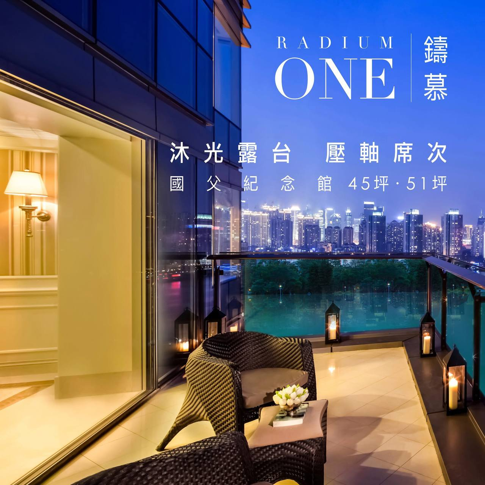
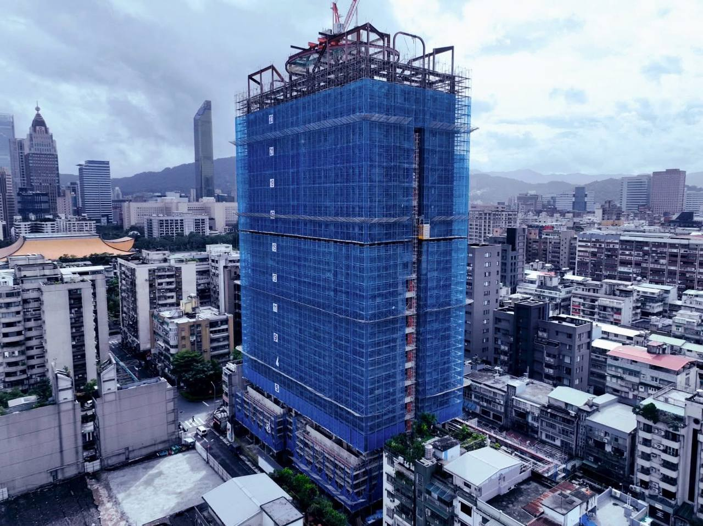

鑄慕 RADIUM ONE 座落於台北市信義與大安區的核心交界，不僅是一個豪宅建案，更是「僑安新村」都更指標案。地處光復南路靜巷，完美詮釋了「繁華入室，靜謐生活」的極致平衡。
本案鄰近廣達約 7 萬坪的國父紀念館園區、大巨蛋體育文化園區及松菸文創園區，形成了台北市中心最龐大的「綠色人文休閒帶」。此地段不只是生活機能完善，更擁有難以被複製的文化底蘊，讓資產價值不僅建立在房屋本身，更包含周邊不可替代的環境資產。
市場數據顯示，本區因土地取得困難，供給量長年處於低檔，具備極高的資產保護功能。
| 項目 | 數據分析 |
|---|---|
| 成交均價 | 約 193.5 萬/坪 |
| 成交區間 | 174.0 - 211.2 萬/坪 |
| 市場觀點 | 隨 AI 產業帶動商辦與高端消費，周邊房市呈現「穩定向上」態勢 |
(本報告由 AI 秘書 SwimCap 整合市場數據而成，旨在為您的投資與生活提供參考依據。)